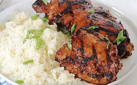

Home
Shoyu Chiken

Shoyu Chiken is a delicious Japanese dish that features tender chicken marinated in a savory soy sauce-based marinade.
The combination of soy sauce, mirin, sake, garlic, and ginger creates a flavorful and aromatic dish that is perfect for any occasion.
Whether you grill it or pan-sear it, Shoyu Chiken is sure to be a hit with its rich umami flavors and juicy texture.
Ingredients
- 4 chicken thighs, skinless and boneless
- 3 tablespoons soy sauce
- 2 tablespoons mirin
- 1 tablespoon sake
- 1 teaspoon sugar
- 1 clove garlic, minced
- 1 teaspoon ginger, grated
Instructions
- In a bowl, combine the soy sauce, mirin, sake, sugar, garlic, and ginger. Mix well.
- Add the chicken thighs to the marinade and toss to coat. Cover and refrigerate for at least 2 hours, or up to overnight.
- Preheat the grill or skillet to medium-high heat.
- Remove the chicken from the marinade and discard the remaining sauce.
- Grill or pan-sear the chicken for about 6-8 minutes per side, or until cooked through and nicely caramelized.
- Let the chicken rest for a few minutes before serving. Enjoy!